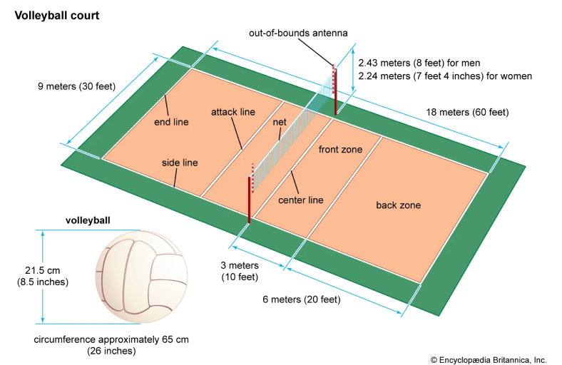
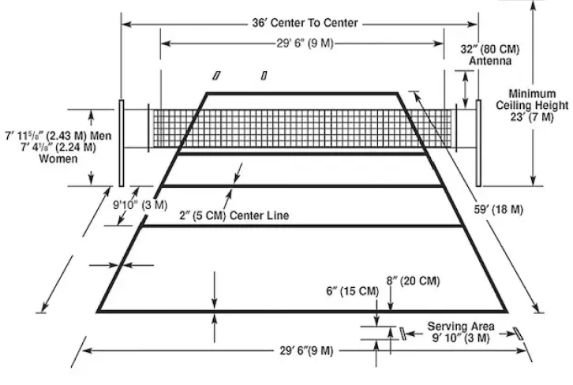
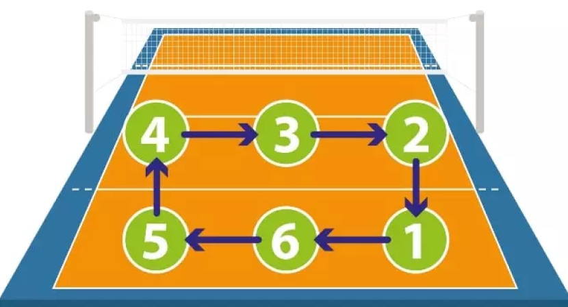

FEB 21 - 02 2025
WESTLAKE
WestLake Boys Volleyball Team
WESTLAKE
WestLake Boys Volleyball Team
What is volleyball?
volleyball, game played by two teams, usually of six players on a side, in which the players use their hands to bat a ball back and forth over a high net, trying to make the ball touch the court within the opponents' playing area before it can be returned.
Rules
Only 6 players on the floor at any given time: 3 in the front row and 3 in the back row. Points are made on every serve for the winning team of the rally (rally-point scoring). Players may not hit the ball twice in succession (a block is not considered a hit). Ball may be played off the net during a volley and on a serve. A ball hitting a boundary line is in. A ball is out if it hits an antennae, the floor completely outside the court, any of the net or cables outside the antennae, the referee stand or pole, or the ceiling above a non-playable area. It is legal to contact the ball with any part of a player's body. It is illegal to catch, hold or throw the ball. A player cannot block or attack a serve from on or inside the 10-foot line. After the serve, front-line players may switch positions at the net. Matches are made up of sets; the number depends on level of play.
Formation
ROTATIONS in volleyball refer to the offensive system that plays a crucial role in shaping a team's offensive strategy. The three main types of offensive systems are 5-1, 6-2 and 4-2. The numbers refer to the number of hitters that rotate through the front court and the number of player(s) that take the primary setting role.
